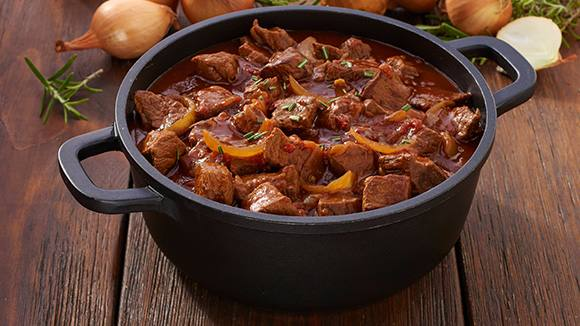

Guiso recipe

Guiso is a Spanish meat dish prepared by roasting or frying combined with braising. It is typically a hot, mildly fatty food. Unlike stew, it allows the vapors to circulate during culinary process.[1] In making guiso, a wide variety of ingredients may be used relative to region, season, availability, and taste.
Ingredients
- 1 links chorizo sausage
- ½ tablespoon and ½ teaspoon olive oil
- ½ pounds cubed beef chuck roast
- ⅓ onion, diced
- ⅓ leek, white part only, chopped
- 1 ⅓ cloves garlic, minced
- ⅔ cup diced butternut squash
- ⅔ potatoes, diced, or more to taste
- ⅔ carrots, diced
- 1 cups water, or as needed
- ⅓ (8 ounce) can tomato sauce
- ⅓ cube vegetable bouillon
- 1 teaspoons ground oregano
- ⅓ teaspoon ground cumin
- salt and ground black pepper to taste
- ⅔ cup ditalini pasta
- ¼ cup and 1 tablespoon and 1 teaspoons frozen peas, thawed
- ¼ cup and 1 tablespoon and 1 teaspoons cooked lentils
- 2 ½ tablespoons and ½ teaspoon chopped fresh parsley
Steps
- Place chorizo in a large skillet over medium heat. Cook, turning occasionally and pricking each link with a fork to release some of the fat, until browned, 4 to 5 minutes. Remove sausages and slice when cool enough to handle. Set aside.
- Heat oil in a large pot over high heat. Add beef and cook until browned, 3 to 4 minutes. Add reserved sausage slices, onion, leek, and garlic and saute until onion is translucent, about 3 minutes. Reduce heat to medium-low and stir in butternut squash, potatoes, and carrots. Add water and tomato sauce. If vegetables are not covered with liquid, add more water to cover.
- Add bouillon cube, oregano, cumin, salt, and pepper and bring to boil. Reduce heat to low and cook, stirring occasionally, until stew thickens up, about 1 hour. Add pasta, peas, lentils, and parsley. Cook until pasta is tender yet firm to the bite, 8 to 10 minutes. You may need to add more water at this point, since the pasta will absorb liquid and the stew may become too dry.